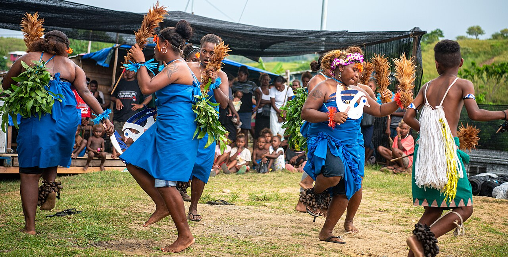
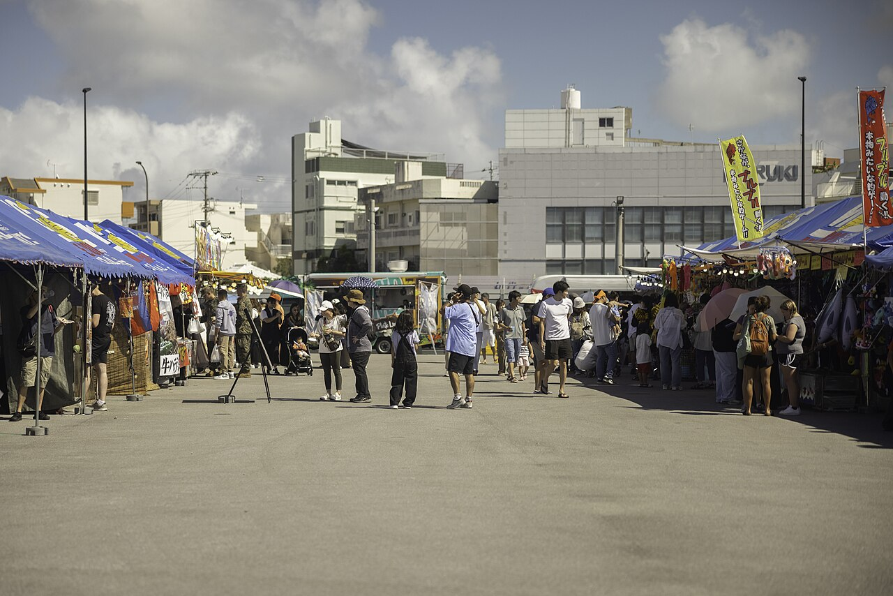
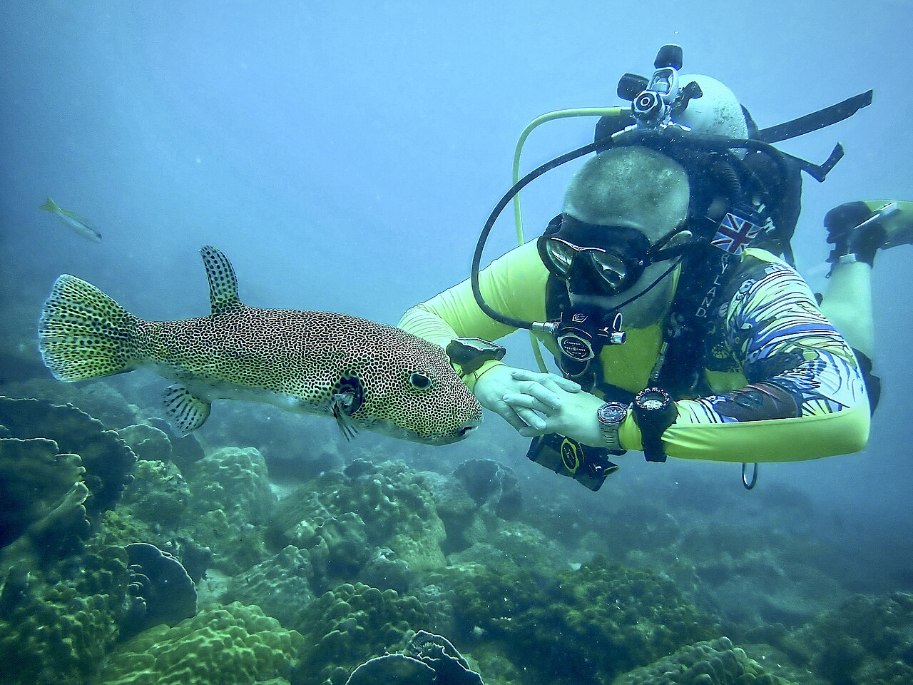

Entertainment
Most people visit Taniti to enjoy the beaches, explore the
rainforest, and visit the volcano. However, there are other things to do,
including visiting a local history museum, going on chartered fishing
tours, snorkeling, ziplining in the rainforest, visiting several pubs,
including a microbrewery, dancing at a new dance club, seeing a movie,
taking helicopter rides, playing at an arcade, visiting art galleries, and
bowling. Also, a nine-hole golf course should be operational by next year.
Many of these activities are in Merriton Landing, which is a rapidly
developing area on the north side of Yellow Leaf Bay.

Island Festival
Sightseeing
Most tourists spend most of their time in Taniti City, which
boasts native architecture and nearby white, sandy beaches that encircle
Yellow Leaf Bay.

Bay Views
Other Activities
- boat or bus tours of the island
- hikes in the rainforest
- visits to Taniti’s active volcano.

Water Adventure
Most people visit Taniti to enjoy the beaches, explore the rainforest, and visit the volcano. However, there are other things to do, including visiting a local history museum, going on chartered fishing tours, snorkeling, ziplining in the rainforest, visiting several pubs, including a microbrewery, dancing at a new dance club, seeing a movie, taking helicopter rides, playing at an arcade, visiting art galleries, and bowling. Also, a nine-hole golf course should be operational by next year. Many of these activities are in Merriton Landing, which is a rapidly developing area on the north side of Yellow Leaf Bay.

Most tourists spend most of their time in Taniti City, which boasts native architecture and nearby white, sandy beaches that encircle Yellow Leaf Bay.

- boat or bus tours of the island
- hikes in the rainforest
- visits to Taniti’s active volcano.
